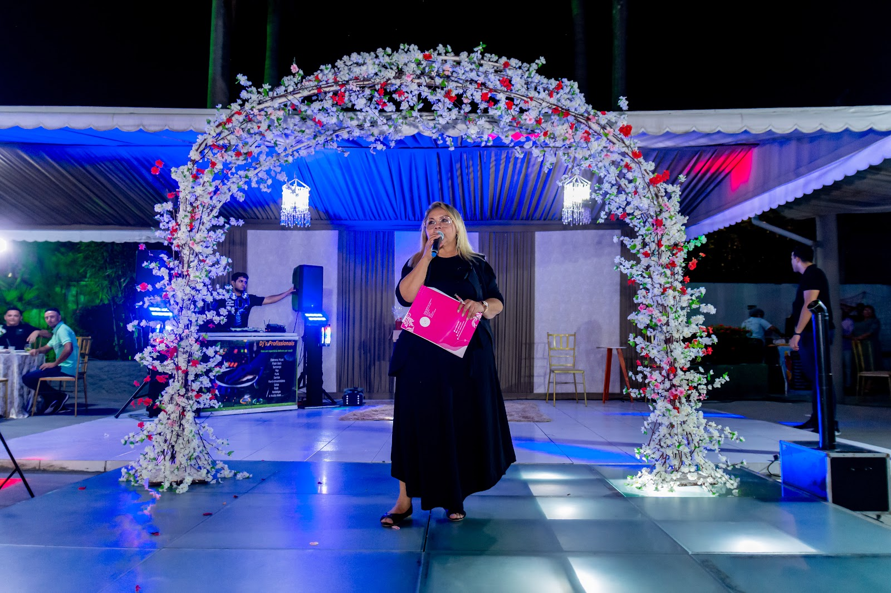
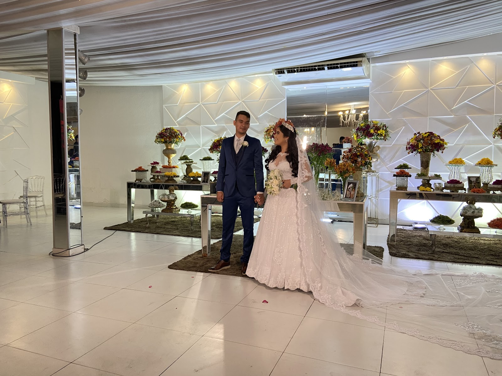
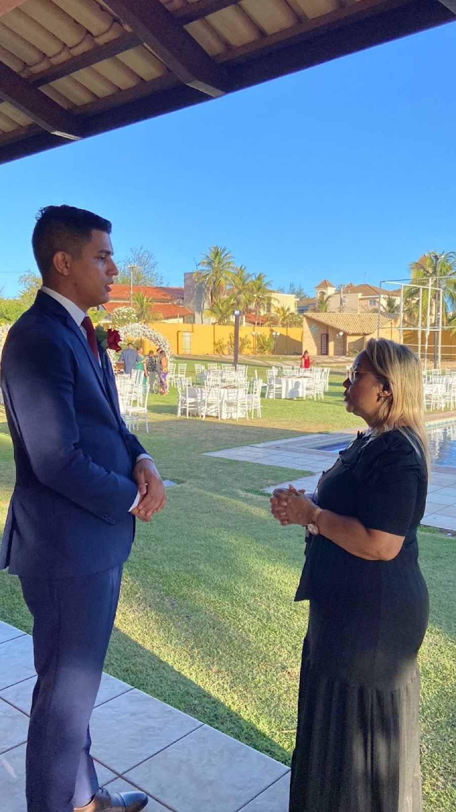
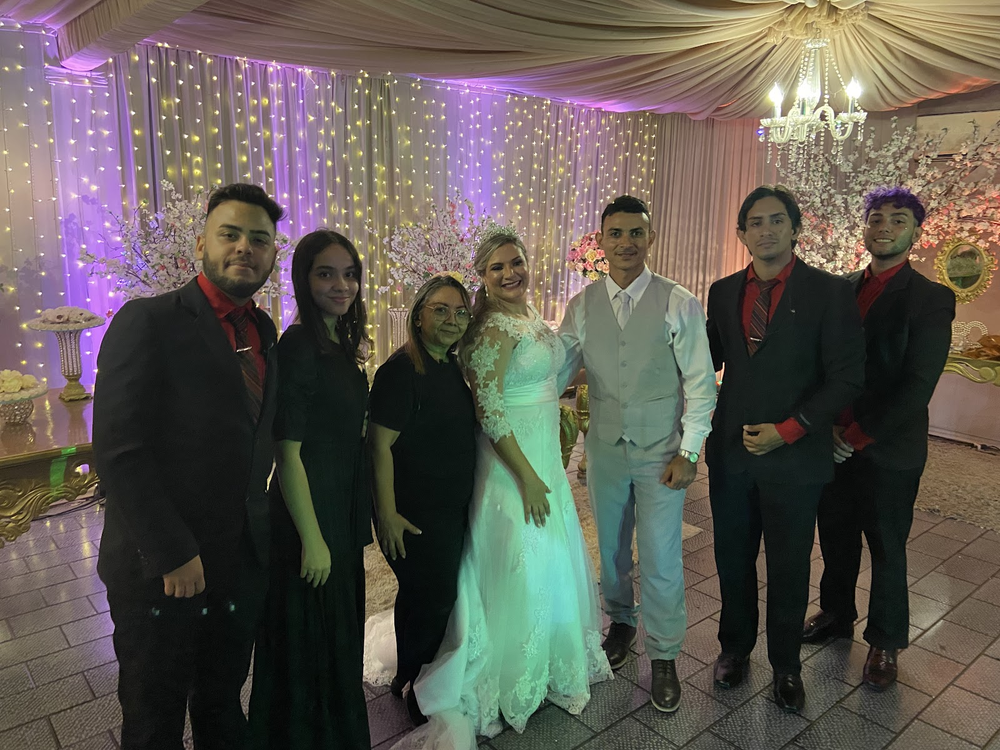
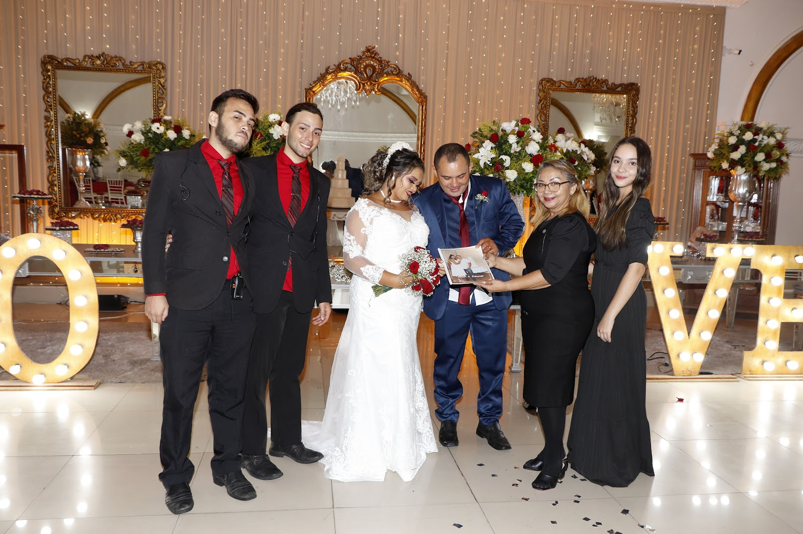
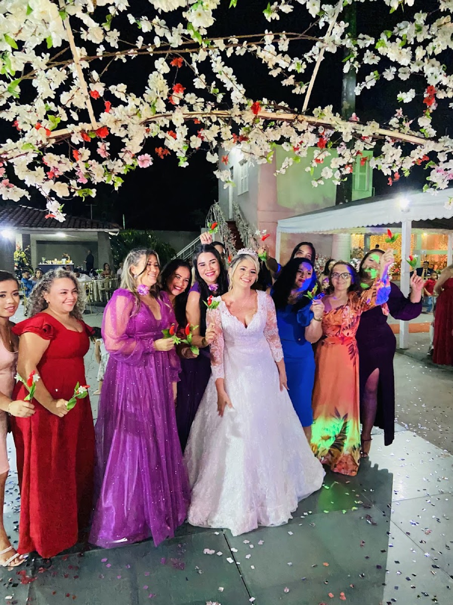

o grande dia
Casamento
Planejamento ao lado dos noivos, indicação de bons profissionais e o cerimonial conduzindo cada entrada e cada horário.

Casamentos, bodas, 15 anos e festas sociais organizados pela Vera Nobre e sua equipe, com carinho, pontualidade e atenção a cada detalhe.
“Ela esteve comigo desde o início até o último detalhe, sempre presente, dando atenção, carinho e dedicação.”Blena, cliente
Do sim no altar à renovação dos votos, da debutante à festa da família: o mesmo cuidado em todos os eventos.
Planejamento ao lado dos noivos, indicação de bons profissionais e o cerimonial conduzindo cada entrada e cada horário.
Renovar os votos com a mesma emoção do primeiro dia, e o casal livre para curtir enquanto a equipe cuida de tudo.
Roteiro da festa, valsa e momentos especiais pensados para a debutante brilhar e a família aproveitar junto.
Aniversários e outras comemorações com organização, recepção dos convidados e o andamento da festa em boas mãos.


Quem contrata a Vera Nobre ganha companhia no planejamento inteiro: tira dúvidas, orienta o que é melhor para o seu evento e acompanha tudo até o fim da festa.
No dia, a equipe assume a organização para que você e sua família vivam o momento sem preocupação.
A palavra que mais aparece nas avaliações da Vera Nobre no Google é “equipe”. Gente organizada e atenciosa, cuidando dos convidados, dos fornecedores e do andamento da festa.
“A equipe é organizada, atenciosa e resolve tudo sem a gente nem perceber. Pude curtir meu dia sem preocupação nenhuma!”
Ruthe e Jean, nas bodas de 3 anos de casados


“Simplesmente a melhor!!! Organização, pontualidade e cuidado com o cliente.”
Janete“Contratei a Vera Nobre para o meu casamento, é uma ótima profissional, muito atenciosa. Todas as dúvidas, ela estava ali presente para me ajudar. Indicações de profissionais maravilhosos… meu próximo evento será ela novamente.”
Deicy“Eu e Tainá, minha esposa, somos muito gratos a Vera Nobre Cerimonial. Tivemos uma festa maravilhosa, com organização impecável e cheia de emoções. Foi muito mais do que aquilo que esperávamos.”
Henrique“Não importa o horário, está sempre disponível para atender com o maior amor e cuidado. É uma profissional incrível, que trabalha com o coração e faz toda a diferença na realização de um sonho!”
Blena“Vera, uma pessoa maravilhosa, atenciosa, te ajuda em cada detalhe a tornar esse dia perfeito… super indico, seu trabalho é maravilhoso.”
Daiany“Ela é uma pessoa que não mede esforços… sempre está ali nos orientando o que é melhor e sempre indicando os melhores profissionais. Obrigada, Vera, por ter participado da festa da minha filha.”
Eliane“Vera Nobre, uma grande profissional, ela tem um dom de transformar e animar, tudo fica perfeito.”
Maria Socorro“Excelente empresa, demonstram ter bastante cordialidade e responsabilidade com os compromissos.”
Carlos“Dotada de criatividade, percepção, empenho e muita competência… eventos bastante marcantes a todos que têm a possibilidade de participarem destes momentos.”
JeffersonTrechos de avaliações públicas no Google.
Responda 5 perguntas rápidas e receba um cronograma sugerido. No final, copie o resumo pronto para enviar à Vera.
Conte a data e o tipo de celebração. A Vera atende em Fortaleza e região.